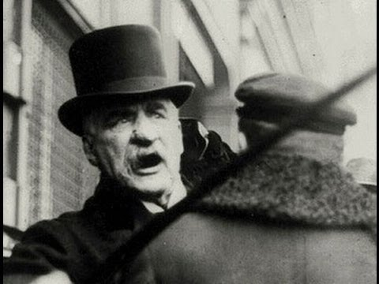

JPMorgan Chase, in its current structure, is the result of the combination of several large U.S. banking companies since 1996, including Chase Manhattan Bank, J.P. Morgan & Co., Bank One, Bear Stearns and Washington Mutual. Going back further, its predecessors include major banking firms among which are Chemical Bank, Manufacturers Hanover, First Chicago Bank, National Bank of Detroit, Texas Commerce Bank, Providian Financial and Great Western Bank. Its original predecessor, the Bank of the Manhattan Company, was the second oldest banking corporation in the United States, and the 31st oldest bank in the world, having been established on September 1, 1799 by Aaron Burr.
The New York Chemical Manufacturing Company was founded in 1823 as a maker of various chemicals. In 1824, the company amended its charter to perform banking activities and created the Chemical Bank of New York. After 1851, the bank was separated from its parent and grew organically and through a series of mergers, most notably with Corn Exchange Bank in 1954, Texas Commerce Bank (a large bank in Texas) in 1986, and Manufacturer's Hanover Trust Company in 1991 (the first major bank merger "among equals"). In the 1980s and early 1990s, Chemical emerged as one of the leaders in the financing of leveraged buyout transactions. In 1984, Chemical launched Chemical Venture Partners to invest in private equity transactions alongside various financial sponsors. By the late 1980s, Chemical developed its reputation for financing buyouts, building a syndicated leveraged finance business and related advisory businesses under the auspices of pioneering investment banker, Jimmy Lee.At many points throughout this history, Chemical Bank was the largest bank in the United States (either in terms of assets or deposit market share).
In 1996, Chemical Bank acquired Chase Manhattan. Although Chemical was the nominal survivor, it took the better-known Chase name. To this day, JPMorgan Chase retains Chemical's pre-1996 stock price history, as well as Chemical's former headquarters at 270 Park Avenue.
The Chase Manhattan Bank was formed upon the 1955 purchase of Chase National Bank (established in 1877) by the Bank of the Manhattan Company (established in 1799), the company's oldest predecessor institution. The Bank of the Manhattan Company was the creation of Aaron Burr, who transformed The Manhattan Company from a water carrier into a bank.
According to page 115 of An Empire of Wealth by John Steele Gordon, the origin of this strand of JPMorgan Chase's history runs as follows:
Led by David Rockefeller during the 1970s and 1980s, Chase Manhattan emerged as one of the largest and most prestigious banking concerns, with leadership positions in syndicated lending, treasury and securities services, credit cards, mortgages, and retail financial services. Weakened by the real estate collapse in the early 1990s, it was acquired by Chemical Bank in 1996, retaining the Chase name. Before its merger with J.P. Morgan & Co., the new Chase expanded the investment and asset management groups through two acquisitions. In 1999, it acquired San Francisco-based Hambrecht & Quist for $1.35 billion. In April 2000, UK-based Robert Fleming & Co.was purchased by the new Chase Manhattan Bank for $7.7 billion.
The heritage of the House of Morgan traces its roots to the partnership of Drexel, Morgan & Co., which in 1895 was renamed J.P. Morgan & Co. (see also: J. Pierpont Morgan). Arguably the most influential financial institution of its era, J.P. Morgan & Co. financed the formation of the United States Steel Corporation, which took over the business of Andrew Carnegie and others and was the world's first billion dollar corporation. In 1895, J.P. Morgan & Co. supplied the United States government with $62 million in gold to float a bond issue and restore the treasury surplus of $100 million. In 1892, the company began to finance the New York, New Haven and Hartford Railroadand led it through a series of acquisitions that made it the dominant railroad transporter in New England.
Built in 1914, 23 Wall Street was known as the "House of Morgan", and for decades the bank's headquarters was the most important address in American finance. At noon, on September 16, 1920, a terrorist bomb exploded in front of the bank, injuring 400 and killing 38. Shortly before the bomb went off, a warning note was placed in a mailbox at the corner of Cedar Street and Broadway. The warning read: "Remember we will not tolerate any longer. Free the political prisoners or it will be sure death for all of you. American Anarchists Fighters." While there are many hypotheses regarding who was behind the bombing and why they did it, after 20 years of investigation the FBI rendered the case inactive without ever finding the perpetrators.
In August 1914, Henry P. Davison, a Morgan partner, traveled to the UK and made a deal with the Bank of England to make J.P. Morgan & Co. the monopoly underwriter of war bonds for the UK and France. The Bank of England became a "fiscal agent" of J.P. Morgan & Co., and vice versa. The company also invested in the suppliers of war equipment to Britain and France. Thus, the company profited from the financing and purchasing activities of the two European governments.
In the 1930s, all of J.P. Morgan & Co. along with all integrated banking businesses in the United States, was required by the provisions of the Glass–Steagall Act to separate its investment banking from its commercial bankingoperations. J.P. Morgan & Co. chose to operate as a commercial bank, because at the time commercial lending was perceived as more profitable and prestigious. Additionally, many within J.P. Morgan believed that a change in political climate would eventually allow the company to resume its securities businesses but it would be nearly impossible to reconstitute the bank if it were disassembled.
In 1935, after being barred from securities business for over a year, the heads of J.P. Morgan spun off its investment-banking operations. Led by J.P. Morgan partners, Henry S. Morgan (son of Jack Morgan and grandson of J. Pierpont Morgan) and Harold Stanley, Morgan Stanley was founded on September 16, 1935, with $6.6 million of nonvoting preferred stock from J.P. Morgan partners. In order to bolster its position, in 1959, J.P. Morgan merged with the Guaranty Trust Company of New York to form the Morgan Guaranty Trust Company. The bank would continue to operate as Morgan Guaranty Trust until the 1980s, before beginning to migrate back toward the use of the J.P. Morgan brand. In 1984, the group finally purchased the Purdue National Corporation of Lafayette Indiana, uniting a history between the two figures of Salmon Portland Chase and John Purdue. In 1988, the company once again began operating exclusively as J.P. Morgan & Co